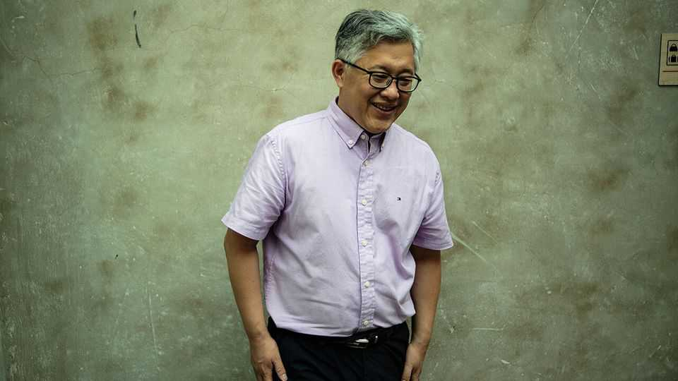

China releases a prominent Christian pastor
Jin Mingri formerly ran a large house church in Beijing
July 9th 2026

One of China’s most influential Christians has been released from detention and has flown to America. Jin Mingri, known as Ezra Jin, was detained in October in a crackdown on religious activity. He was the pastor of Zion church in Beijing, one of China’s biggest house churches. When authorities shut it down in 2018, he moved services online, broadening its reach. Donald Trump raised his case with Xi Jinping in May. He also spoke about Jimmy Lai, a pro-democracy tycoon serving 20 years in a Hong Kong jail for “conspiracy to collude with foreign forces”. Mr Xi reportedly told him that Mr Lai’s case was “a tough one”. Other pastors from Zion church remain locked up. ■
Subscribers can sign up to Drum Tower, our new weekly newsletter, to understand what the world makes of China—and what China makes of the world.